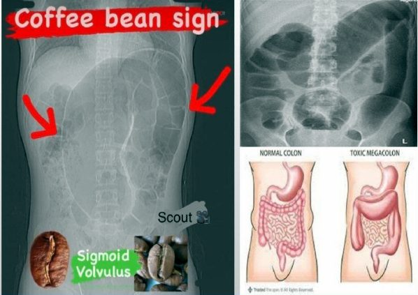
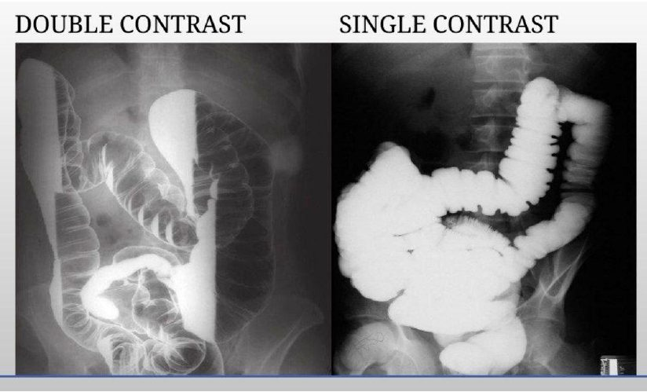
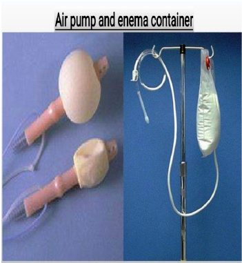
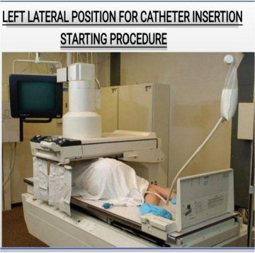
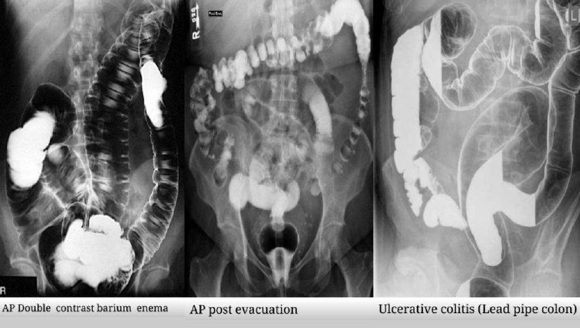
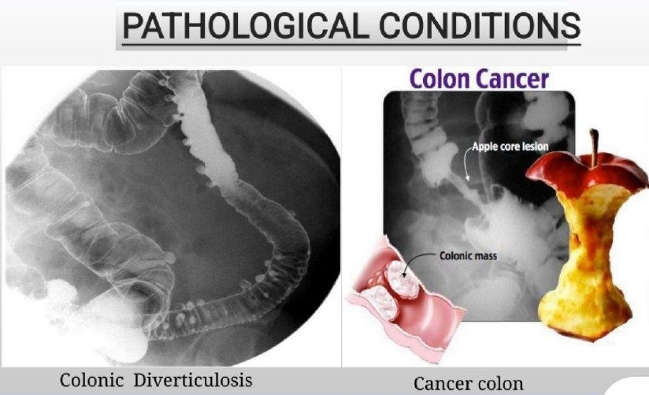

حقنة الباريوم الشرجيةLecture 5: BARIUM ENEMA
نظري · م05 · 10.9 دقيقةأقسام المحاضرة (9)
- حقنة الباريوم الشرجية ومراجعة سريعة للتشريحBARIUM ENEMA
- الدواعي والموانع وانسداد الأمعاء الغليظةIndications, Contraindications & Large bowel obstruction
- تحضير المريضPREPARATION
- الطرق ومواد التباينMethods & CONTRAST MEDIA
- التقنية (طريقة التباين المزدوج)Technique / The double-contrast method
- الصور الشعاعية المأخوذةX – RAY VIEWS TAKEN
- الرعاية اللاحقة والمضاعفاتAftercare & Complications
- حالتان سريريتانCase 1 & Case 2
- متغيرات الحقنة الشرجية: الحقنة «الفورية» وحقنة الهواءENEMA VARIANTS
حقنة الباريوم الشرجية ومراجعة سريعة للتشريحBARIUM ENEMA
حقنة الباريوم الشرجيةBARIUM ENEMA
- • It is the radiographic study of the large bowel by administration of the contrast medium through the rectum.هي الدراسة الشعاعية للأمعاء الغليظة بإعطاء مادة التباين عبر المستقيم.
- • The purpose of the barium enema is to know the form and function of the large intestine and to detect any abnormal conditions.الغرض من حقنة الباريوم الشرجية معرفة شكل الأمعاء الغليظة ووظيفتها، واكتشاف أي حالات غير طبيعية.
مراجعة سريعة للتشريحRapid anatomy review:
- • The large intestine, which is the terminal part of gastrointestinal (GI) tract,الأمعاء الغليظة هي الجزء النهائي من الجهاز الهضمي،
- • it is so called because its lumen (diameter) is larger, not because its length is greater (1.5 M), than that of the small intestine (4 – 6.5M) in fact, small intestine is longer than the large intestine.وتُسمّى كذلك لأن تجويفها (قطرها) أكبر، وليس لأن طولها (1.5 م) أكبر من طول الأمعاء الدقيقة (4 – 6.5 م)؛ فالأمعاء الدقيقة في الواقع أطول من الغليظة.
- • Large bowel consist of :Cecum (the widest part of large intestine), Ascending colon, Transverse colon, Descending colon, Sigmoid colon (the narrowest part of colon) & Rectum and anal Canal.تتكوّن الأمعاء الغليظة من: الأعور (أوسع جزء في الأمعاء الغليظة)، والقولون الصاعد، والقولون المستعرض، والقولون النازل، والقولون السيني (أضيق جزء في القولون)، والمستقيم والقناة الشرجية.
الدواعي والموانع وانسداد الأمعاء الغليظةIndications, Contraindications & Large bowel obstruction
الدواعيIndications:
- 1. Rectal bleeding.نزيف شرجي.
- 2. History of carcinoma or polyp.تاريخ سرطان أو سليلة.
- 3. Patient with severe diverticulosis, polyposis or diarrhoea.مريض لديه داء رتجي شديد، أو داء السلائل، أو إسهال.
- 4. Presence of obstruction.وجود انسداد.
- 5. Reduction of an intussusception.رد الانغلاف المعوي.
الموانعContraindications :
- 1. Toxic megacolon ( severe dilatation ).تضخم القولون السام (توسّع شديد).
- 2. inflammatory colon disease.مرض التهابي في القولون.
- 3. Recent biopsy.خزعة حديثة.
- 4. Incomplete bowel preparation.تحضير غير كامل للأمعاء.
- 5. Patient frailty.ضعف المريض.
انسداد الأمعاء الغليظةLarge bowel obstruction:
This upright abdominal x-ray shows multiple air-fluid levels, which are indicative of a bowel obstruction. Most bowel obstructions are small-bowel obstructions, caused by intraperitoneal adhesions.
تُظهر صورة البطن الشعاعية هذه بوضعية الوقوف مستويات هواء–سائل متعددة، وهي تدل على انسداد الأمعاء. ومعظم انسدادات الأمعاء هي انسدادات في الأمعاء الدقيقة، تنتج عن التصاقات داخل الصفاق.
However, careful review of this shows dilation of the large intestine, indicated by the larger caliber of the air filled segments and the transverse lines called haustra.
ومع ذلك، يُظهر التدقيق في هذه الصورة توسّعاً في الأمعاء الغليظة، يدل عليه كِبَر قطر الأجزاء الممتلئة بالهواء والخطوط العرضية التي تُسمّى الجيوب القولونية (haustra).

تحضير المريضPREPARATION
التحضيرPREPARATION:
1. لمدة 3 أيام قبل الفحص1. For 3 days prior to examination
- • Low-residue diet (low fiber), should not have any fatty fried foods nor vegetables fruits,نظام غذائي قليل الفضلات (قليل الألياف)، ولا يتناول المريض أي أطعمة مقلية دسمة ولا خضراوات ولا فواكه.
2. في اليوم السابق للفحص2. On the day prior to examination
- • Fluids onlyسوائل فقط
- • Purgative like Castor Oil (30 ml) or Bisacodyl (15- 20 mg),مسهّل مثل زيت الخروع (30 مل) أو البيساكوديل (15–20 ملغ).
3. غسل الأمعاء3. Bowel wash
- • Pass the tube beyond the rectosigmoid junction and infuse about 1.5-2 liters of fluid allowing evacuation. repeat this till efflux is clear of any fecal matter.يُمرَّر الأنبوب إلى ما بعد الوصلة المستقيمية السينية، ويُحقن نحو 1.5–2 لتر من السائل مع السماح بالإفراغ. يُكرَّر ذلك حتى يصبح الخارج خالياً من أي مادة برازية.
It is advisable to place diabetics first on the list.
يُنصح بوضع مرضى السكري أولاً في قائمة الفحوصات.
لا يُحضَّر المريض في الحالات الآتيةPreparation of the Patient should not be done in:
- 1. Diarrhoea.الإسهال.
- 2. Total obstruction.الانسداد التام.
- 3. Paralytic ileus.الشلل المعوي (العِلَوص الشللي) (الانسداد الشللي).
- 4. Children less than 8 yrs. of age.الأطفال دون عمر 8 سنوات.
الطرق ومواد التباينMethods & CONTRAST MEDIA
الطرقMethods:
- • Double contrast – the method of choice to demonstrate mucosal pattern.التباين المزدوج – الطريقة المختارة لإظهار نمط الغشاء المخاطي.
- • Single contrast – uses:التباين المفرد – استعمالاته:
- • localization of an obstructing colonic lesion (use water-soluble contrast ).تحديد موقع آفة قولونية مسدِّدة (يُستعمل تباين ذائب في الماء).
- • children – not necessary to demonstrate mucosal pattern.الأطفال – ليس ضرورياً إظهار نمط الغشاء المخاطي.
- • reduction of an intussusception.رد الانغلاف المعوي.

مواد التباينCONTRAST MEDIA:
- 1. Polibar 115% w/v 500 mL (or more, as required)Polibar بتركيز 115% وزن/حجم، 500 مل (أو أكثر حسب الحاجة)
- 2. Airالهواء
- • A standard mixture used for single-contrast barium enemas is between 15% and 25% (w/ v).المزيج القياسي المستعمل في حقن الباريوم الشرجية ذات التباين المفرد بين 15% و25% (وزن/حجم).
- • The thicker barium used for double-contrast barium enemas between 75% and 95% or greater. Plus air or Co2 as negative contrast.أما الباريوم الأثخن المستعمل في الحقن ذات التباين المزدوج فيتراوح بين 75% و95% أو أكثر، مع الهواء أو ثاني أكسيد الكربون (CO2) كتباين سلبي.
المعداتEquipment
- • Disposable enema tube and pump.أنبوب حقنة شرجية ومضخة يُستعملان لمرة واحدة.
التقنية (طريقة التباين المزدوج)Technique / The double-contrast method
التقنية / طريقة التباين المزدوجTechnique / The double-contrast method:
1. The patient lies on their left lateral side, and the ((catheter is inserted gently into the rectum)).
1. يستلقي المريض على جانبه الأيسر، وتُدخَل القسطرة برفق في المستقيم.
2. Connections are made to the barium reservoir and the hand pump for injecting air.
2. تُوصَّل الوصلات بخزان الباريوم وبمضخة اليد المخصصة لحقن الهواء.
3. An i.v. injection of Buscopan (20 mg) or glucagon (1 mg) is given.
3. تُعطى حقنة وريدية من Buscopan (20 ملغ) أو الغلوكاغون (1 ملغ).
4. The infusion of barium is started & Intermittent fluoroscopic screening is required to check the progress of the barium((with a table tilt of 10 degrees head down)).
4. يبدأ حقن الباريوم، ويلزم فحص تنظيري شعاعي متقطع للتحقق من تقدّم الباريوم (مع إمالة الطاولة 10 درجات برأس منخفض).
5. When barium reach the splenic flexure turn the patient to prone position.
5. عندما يصل الباريوم إلى الثنية الطحالية يُدار المريض إلى وضعية الانبطاح.
Contrast will run through transverse colon to the hepatic flexure and stopped when it tips into the right colon.
يمرّ التباين عبر القولون المستعرض إلى الثنية الكبدية، ويتوقف عندما يصل إلى القولون الأيمن.
5. Gentle puffs of air may be needed to encourage the barium to flow. The patient rolls onto their right and quickly onto their back.
5. قد يلزم ضخّ نفخات هواء خفيفة لتشجيع تدفق الباريوم. يُدار المريض إلى جانبه الأيمن ثم بسرعة إلى ظهره.
6. The catheter tube that contain barium is occluded and air is gently pumped into the bowel to produce the double-contrast effect.
6. يُسَدّ أنبوب القسطرة الذي يحتوي الباريوم، ويُضخّ الهواء برفق في الأمعاء لإنتاج تأثير التباين المزدوج.
As soon as the barium reflux across ileocaecal junction takes place, the tube is clamped and ileocaecal spot films are exposed.
بمجرد حدوث ارتداد الباريوم عبر الوصل اللفائفي الأعوري يُشبَّك الأنبوب، وتُؤخذ صور موضعية (spot films) للوصل اللفائفي الأعوري.
CO2 gas has been shown to reduce the incidence of severe, post enema pain so, preferred on room air.
تبيّن أن غاز CO2 يقلل حدوث الألم الشديد بعد الحقنة الشرجية، لذا يُفضَّل على هواء الغرفة.
After the examination has been completed, most of the barium can be drained back into the bag by lowering the system to below table top level. The entire bag and tubing are disposed of after a single use.
بعد إكمال الفحص يمكن تصريف معظم الباريوم عائداً إلى الكيس بخفض المنظومة إلى ما دون مستوى سطح الطاولة. ويُتخلَّص من الكيس والأنابيب كلها بعد استعمال واحد.


الصور الشعاعية المأخوذةX – RAY VIEWS TAKEN
الصور الشعاعية المأخوذةX – RAY VIEWS TAKEN:
- • All films taken on expiration.تؤخذ كل الأفلام عند الزفير.
- • All films (14 x 17 inch ) except rectum views (10 x12 inch ) in size .جميع الأفلام بحجم (14 × 17 إنش) باستثناء صور المستقيم (10 × 12 إنش).
- • 110 KVP should be used on adults.يُستعمل جهد 110 kVp للبالغين.
- • 90 KVP should be used on infants.يُستعمل جهد 90 kVp للرُّضّع.
1. فيلم الكشف1. Scout film :
- • plain radiograph of the abdomen area,صورة شعاعية بسيطة لمنطقة البطن،
- • Central ray at the level of the L4 or the iliac crest,الشعاع المركزي عند مستوى الفقرة القطنية الرابعة (L4) أو العُرف الحرقفي،
- • 40 inch SID [source-image distance],مسافة المصدر–الصورة (SID) 40 إنش،
- • Respiration is suspended during expiration,يُوقَف التنفس أثناء الزفير،
2. الوضعية AP أو PA (منطقة المستقيم والسيني)2. AP or PA (recto sigmoid area):
- • Patient supine or prone,المريض مستلقٍ على ظهره أو منبطح،
- • Viewing rectum and sigmoid,لإظهار المستقيم والسيني،
- • Central Ray: PA 30 degree caudally, AP 30 degree cephalic,الشعاع المركزي: في PA بزاوية 30 درجة ذيلياً، وفي AP بزاوية 30 درجة رأسياً،
- • 40" SID.مسافة المصدر–الصورة 40 إنش.
3. الوضعية AP (تباين مفرد)3. AP (Single Contrast)
- • An Entire colon filled with contrast media should be Demonstrated,يجب إظهار القولون كاملاً ممتلئاً بمادة التباين،
- • CR is at the level of the L4 or at the level of the iliac crest.الشعاع المركزي (CR) عند مستوى الفقرة القطنية الرابعة أو عند مستوى العُرف الحرقفي.
4. الوضعية AP بتباين مزدوج4. AP Double Contrast:
- • Patient lies in a supine Position,يستلقي المريض على ظهره،
- • An Entire colon filled with positive and negative contrast media should be demonstrated,يجب إظهار القولون كاملاً ممتلئاً بمواد تباين موجبة وسالبة،
- • CR is at the level of the L4 or at the level of the iliac crest.الشعاع المركزي عند مستوى الفقرة القطنية الرابعة أو عند مستوى العُرف الحرقفي.
5. الوضعية RPO5. RPO Position:
- • Instruct the patient to lie on his right side making an angulation of 3545deg,يُطلب من المريض الاستلقاء على جانبه الأيمن بزاوية ميل 35–45 درجة،
- • It is taken primarily to demonstrate the Left Colic(splenic) flexure and Descending colon should be visualized,تُؤخذ أساساً لإظهار الثنية القولونية اليسرى (الطحالية)، ويجب أن يظهر القولون النازل،
- • CR is at the level of the L4 or at the level of the iliac crest.الشعاع المركزي عند مستوى الفقرة القطنية الرابعة أو عند مستوى العُرف الحرقفي.
6. الاضطجاع الجانبي الأيمن والأيسر6. Right & left Lateral Decubitus:
- • Best demonstrate the “up” medial and lateral sides of the ascending and descending colon with CR at level of L4 or iliac crest.تُظهر على أفضل وجه الجانبين الأنسي والوحشي «العلويين» للقولون الصاعد والنازل، مع الشعاع المركزي عند مستوى الفقرة القطنية الرابعة أو العُرف الحرقفي.
7. فيلم ما بعد الإفراغ7. Post evacuation film:
- • Is taken after the procedure is done and patient evacuate his bowel.يُؤخذ بعد انتهاء الإجراء وبعد أن يفرغ المريض أمعاءه.
- • Called mucosal relief filmيُسمّى فيلم تضاريس الغشاء المخاطي
- • Polyposis and diverticulosis can be better visualized on post-evacuation films.يمكن رؤية داء السلائل وداء الرتوج بصورة أفضل على أفلام ما بعد الإفراغ.

الرعاية اللاحقة والمضاعفاتAftercare & Complications
الرعاية اللاحقةAftercare
- 1. The patient must not drive until any blurring of vision produced by Buscopan has resolved, usually within 30 min.يجب ألا يقود المريض حتى يزول أي تشوّش في الرؤية ناتج عن Buscopan، وذلك عادةً خلال 30 دقيقة.
- 2. Patients should be warned that their bowel motions will be white for a few days after the examination.يجب تحذير المرضى من أن برازهم سيكون أبيض اللون لبضعة أيام بعد الفحص.
المضاعفاتComplications:
- 1. Cardiac arrhythmias induced by Buscopan or the procedure itself. This is the most frequent cause of death after barium enema.اضطرابات نظم القلب التي يسببها Buscopan أو الإجراء نفسه. وهذا هو السبب الأكثر شيوعاً للوفاة بعد حقنة الباريوم الشرجية.
- 2. Perforation of the bowel (often related to manipulation of the rectal catheter balloon).انثقاب الأمعاء (ويرتبط غالباً بتحريك بالون القسطرة الشرجية).
- 3. Transient bacteraemia.تجرثم الدم العابر.
- 4. Side effects of the pharmacological agents used.الآثار الجانبية للعوامل الدوائية المستعملة.
- 5. Venous intravasation. This may result in a barium pulmonary embolus, which carries an 80% mortality risk.دخول الباريوم إلى الأوردة. وقد يؤدي ذلك إلى صمّة رئوية بالباريوم، وهي تحمل خطر وفاة بنسبة 80%.

حالتان سريريتانCase 1 & Case 2
الحالة 1Case 1:
65year male Complain from peri anal pain and discharge for one year associated with intermitant fever and bleeding per rectum.
رجل عمره 65 سنة يشكو من ألم حول الشرج وإفرازات منذ سنة، يصاحبها حمّى متقطعة ونزيف من المستقيم.
Send for barium enema.
يُحال لإجراء حقنة الباريوم الشرجية.
الحالة 2Case 2:
50years old man with history of frequent bowel motion for 3 month associated with lower abdominal pain and weight loss.
رجل عمره 50 سنة لديه تاريخ حركة أمعاء متكررة منذ 3 أشهر، يصاحبها ألم في أسفل البطن ونقص في الوزن.
Send for barium enema
يُحال لإجراء حقنة الباريوم الشرجية.
متغيرات الحقنة الشرجية: الحقنة «الفورية» وحقنة الهواءENEMA VARIANTS
متغيرات الحقنة الشرجيةENEMA VARIANTS
These variants have been superseded by CT but may provide extra information in selected cases.
حلّ التصوير المقطعي المحوسب محل هذه المتغيرات، لكنها قد تعطي معلومات إضافية في حالات مختارة.
الحقنة «الفورية»THE ‘INSTANT’ ENEMA
الدواعيIndications
- 1. To identify/confirm the level of suspected large bowel obstruction and to assess the degree of narrowing (e.g. sometimes helpful in stent planning).تحديد/تأكيد مستوى انسداد الأمعاء الغليظة المشتبه به وتقدير درجة التضيّق (مثلاً: مفيدة أحياناً في التخطيط لوضع الدعامة).
- 2. Rarely, to show the extent and severity of mucosal lesions in active ulcerative colitis.نادراً: لإظهار مدى وشدة آفات الغشاء المخاطي في التهاب القولون التقرحي النشط.
الموانعContraindications
- 1. Toxic megacolonتضخم القولون السام
- 2. Rectal biopsy (as for barium enema)خزعة المستقيم (كما في حقنة الباريوم الشرجية)
- 3. Chronic ulcerative colitis.التهاب القولون التقرحي المزمن.
- 4. Crohn’s colitis: Assessment in this situation is unreliable.التهاب القولون في داء كرون: التقييم في هذه الحالة غير موثوق.
مادة التباينContrast Medium
Water-soluble contrast (e.g. Urografin 150).
مادة تباين ذائبة في الماء (مثل Urografin 150).
الصورة الأولية: فيلم بطن بسيط لاستبعاد:Preliminary Image: Plain abdominal film to exclude:
- 1. Toxic megacolon.تضخم القولون السام.
- 2. Perforation.الانثقاب.
التقنيةTechnique
- 1. The contrast medium is run until it flows into an obstructing lesion or dilated bowel loops.تُمرَّر مادة التباين حتى تتدفق إلى آفة مسدِّدة أو إلى عرى معوية متوسعة.
- 2. Air insufflation is not required (i.e. single contrast technique).لا يلزم نفخ الهواء (أي تقنية التباين المفرد).
الصورImages
Images are obtained as required, generally to include views of pathology encountered, but may include prone, left lateral decubitus and erect films as necessary.
تُؤخذ الصور حسب الحاجة، وتشمل عموماً مناظر للآفة المصادفة، وقد تشمل وضعية الانبطاح والاضطجاع الجانبي الأيسر ووضعية الوقوف عند اللزوم.
حقنة الهواء (نادرة الاستعمال جداً)AIR ENEMA ((Very rarely used))
الدواعيIndications
Demonstrate extent of ulcerative colitis.
إظهار مدى التهاب القولون التقرحي.
التقنيةTechnique
- 1. Insert 14–16-F Foley catheter into rectum and inflate balloon (10–20 mL).تُدخَل قسطرة فولي بقياس 14–16 فرنسي (F) في المستقيم ويُنفَخ البالون (10–20 مل).
- 2. Take preliminary over couch AP film of abdomen.يُؤخذ فيلم أولي أمامي خلفي للبطن فوق الطاولة.
- 3. View film and without the patient moving give relaxant (e.g. Buscopan) and then inflate air (gentle puffs) into catheter lumen.يُشاهَد الفيلم، ودون أن يتحرك المريض يُعطى مرخياً (مثل Buscopan) ثم يُنفَخ الهواء (نفخات خفيفة) في تجويف القسطرة.
- 4. Take AP film of abdomen.يُؤخذ فيلم أمامي خلفي للبطن.
المحاضرة مسموعة
نص الأستاذ بالإنكليزي مثل الأصل · 10.9 دقيقة. اضغط أي جملة تسمعها، أو مصطلح منقّط تسمع لفظه ومعناه.
BARIUM ENEMAحقنة الباريوم الشرجية ومراجعة سريعة للتشريح
BARIUM ENEMA
BARIUM ENEMA
It is the radiographic study of the large bowel by administration of the contrast medium through the rectum.
The purpose of the barium enema is to know the form and function of the large intestine and to detect any abnormal conditions.
Rapid anatomy review:
The large intestine, which is the terminal part of gastrointestinal (GI) tract,
it is so called because its lumen (diameter) is larger, not because its length is greater (1.5 M), than that of the small intestine (4 – 6.5M) in fact, small intestine is longer than the large intestine.
Large bowel consist of :Cecum (the widest part of large intestine), Ascending colon, Transverse colon, Descending colon, Sigmoid colon (the narrowest part of colon) & Rectum and anal Canal.
Indications, Contraindications & Large bowel obstructionالدواعي والموانع وانسداد الأمعاء الغليظة
Indications, Contraindications & Large bowel obstruction
Indications:
Rectal bleeding.
History of carcinoma or polyp.
Patient with severe diverticulosis, polyposis or diarrhoea.
Presence of obstruction.
Reduction of an intussusception.
Contraindications :
Toxic megacolon ( severe dilatation ).
inflammatory colon disease.
Recent biopsy.
Incomplete bowel preparation.
Patient frailty.
Large bowel obstruction:
This upright abdominal x-ray shows multiple air-fluid levels, which are indicative of a bowel obstruction. Most bowel obstructions are small-bowel obstructions, caused by intraperitoneal adhesions.
However, careful review of this shows dilation of the large intestine, indicated by the larger caliber of the air filled segments and the transverse lines called haustra.
PREPARATIONتحضير المريض
PREPARATION
PREPARATION:
1. For 3 days prior to examination
Low-residue diet (low fiber), should not have any fatty fried foods nor vegetables fruits,
2. On the day prior to examination
Fluids only
Purgative like Castor Oil (30 ml) or Bisacodyl (15- 20 mg),
3. Bowel wash
Pass the tube beyond the rectosigmoid junction and infuse about 1.5-2 liters of fluid allowing evacuation. repeat this till efflux is clear of any fecal matter.
It is advisable to place diabetics first on the list.
Preparation of the Patient should not be done in:
Diarrhoea.
Total obstruction.
Paralytic ileus.
Children less than 8 yrs. of age.
Methods & CONTRAST MEDIAالطرق ومواد التباين
Methods & CONTRAST MEDIA
Methods:
Double contrast – the method of choice to demonstrate mucosal pattern.
Single contrast – uses:
localization of an obstructing colonic lesion (use water-soluble contrast ).
children – not necessary to demonstrate mucosal pattern.
reduction of an intussusception.
CONTRAST MEDIA:
Polibar 115% w/v 500 mL (or more, as required)
Air
A standard mixture used for single-contrast barium enemas is between 15% and 25% (w/ v).
The thicker barium used for double-contrast barium enemas between 75% and 95% or greater. Plus air or Co2 as negative contrast.
Equipment
Disposable enema tube and pump.
Technique / The double-contrast methodالتقنية (طريقة التباين المزدوج)
Technique / The double-contrast method
Technique / The double-contrast method:
1. The patient lies on their left lateral side, and the ((catheter is inserted gently into the rectum)).
2. Connections are made to the barium reservoir and the hand pump for injecting air.
3. An i.v. injection of Buscopan (20 mg) or glucagon (1 mg) is given.
4. The infusion of barium is started & Intermittent fluoroscopic screening is required to check the progress of the barium((with a table tilt of 10 degrees head down)).
5. When barium reach the splenic flexure turn the patient to prone position.
Contrast will run through transverse colon to the hepatic flexure and stopped when it tips into the right colon.
5. Gentle puffs of air may be needed to encourage the barium to flow. The patient rolls onto their right and quickly onto their back.
6. The catheter tube that contain barium is occluded and air is gently pumped into the bowel to produce the double-contrast effect.
As soon as the barium reflux across ileocaecal junction takes place, the tube is clamped and ileocaecal spot films are exposed.
CO2 gas has been shown to reduce the incidence of severe, post enema pain so, preferred on room air.
After the examination has been completed, most of the barium can be drained back into the bag by lowering the system to below table top level. The entire bag and tubing are disposed of after a single use.
X – RAY VIEWS TAKENالصور الشعاعية المأخوذة
X – RAY VIEWS TAKEN
X – RAY VIEWS TAKEN:
All films taken on expiration.
All films (14 x 17 inch ) except rectum views (10 x12 inch ) in size .
110 KVP should be used on adults.
90 KVP should be used on infants.
1. Scout film :
plain radiograph of the abdomen area,
Central ray at the level of the L4 or the iliac crest,
40 inch SID [source-image distance],
Respiration is suspended during expiration,
2. AP or PA (recto sigmoid area):
Patient supine or prone,
Viewing rectum and sigmoid,
Central Ray: PA 30 degree caudally, AP 30 degree cephalic,
40" SID.
3. AP (Single Contrast)
An Entire colon filled with contrast media should be Demonstrated,
CR is at the level of the L4 or at the level of the iliac crest.
4. AP Double Contrast:
Patient lies in a supine Position,
An Entire colon filled with positive and negative contrast media should be demonstrated,
CR is at the level of the L4 or at the level of the iliac crest.
5. RPO Position:
Instruct the patient to lie on his right side making an angulation of 3545deg,
It is taken primarily to demonstrate the Left Colic(splenic) flexure and Descending colon should be visualized,
CR is at the level of the L4 or at the level of the iliac crest.
6. Right & left Lateral Decubitus:
Best demonstrate the “up” medial and lateral sides of the ascending and descending colon with CR at level of L4 or iliac crest.
7. Post evacuation film:
Is taken after the procedure is done and patient evacuate his bowel.
Called mucosal relief film
Polyposis and diverticulosis can be better visualized on post-evacuation films.
Aftercare & Complicationsالرعاية اللاحقة والمضاعفات
Aftercare & Complications
Aftercare
The patient must not drive until any blurring of vision produced by Buscopan has resolved, usually within 30 min.
Patients should be warned that their bowel motions will be white for a few days after the examination.
Complications:
Cardiac arrhythmias induced by Buscopan or the procedure itself. This is the most frequent cause of death after barium enema.
Perforation of the bowel (often related to manipulation of the rectal catheter balloon).
Transient bacteraemia.
Side effects of the pharmacological agents used.
Venous intravasation. This may result in a barium pulmonary embolus, which carries an 80% mortality risk.
Case 1 & Case 2حالتان سريريتان
Case 1 & Case 2
Case 1:
65year male Complain from peri anal pain and discharge for one year associated with intermitant fever and bleeding per rectum.
Send for barium enema.
Case 2:
50years old man with history of frequent bowel motion for 3 month associated with lower abdominal pain and weight loss.
Send for barium enema
ENEMA VARIANTSمتغيرات الحقنة الشرجية: الحقنة «الفورية» وحقنة الهواء
ENEMA VARIANTS
ENEMA VARIANTS
These variants have been superseded by CT but may provide extra information in selected cases.
THE ‘INSTANT’ ENEMA
Indications
To identify/confirm the level of suspected large bowel obstruction and to assess the degree of narrowing (e.g. sometimes helpful in stent planning).
Rarely, to show the extent and severity of mucosal lesions in active ulcerative colitis.
Contraindications
Toxic megacolon
Rectal biopsy (as for barium enema)
Chronic ulcerative colitis.
Crohn’s colitis: Assessment in this situation is unreliable.
Contrast Medium
Water-soluble contrast (e.g. Urografin 150).
Preliminary Image: Plain abdominal film to exclude:
Toxic megacolon.
Perforation.
Technique
The contrast medium is run until it flows into an obstructing lesion or dilated bowel loops.
Air insufflation is not required (i.e. single contrast technique).
Images
Images are obtained as required, generally to include views of pathology encountered, but may include prone, left lateral decubitus and erect films as necessary.
AIR ENEMA ((Very rarely used))
Indications
Demonstrate extent of ulcerative colitis.
Technique
Insert 14–16-F Foley catheter into rectum and inflate balloon (10–20 mL).
Take preliminary over couch AP film of abdomen.
View film and without the patient moving give relaxant (e.g. Buscopan) and then inflate air (gentle puffs) into catheter lumen.
Take AP film of abdomen.
37 سؤال من نص المحاضرة، ويّا «ليش صح» بعد كل جواب.
ابدأ الاختباراضغط أي مصطلح منقّط تسمع لفظه ومعناه.